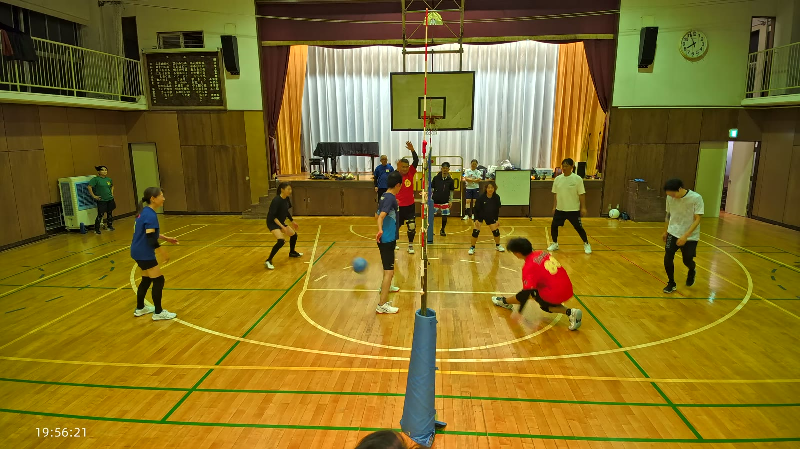
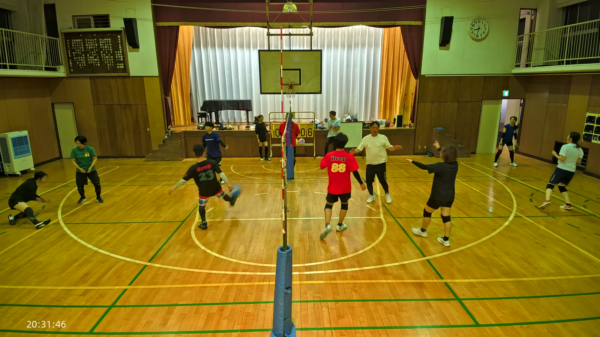

どの行も押すと、下の②の詳しいところへ飛びます。


この日、るきのプレーの直後には必ずと言っていいほど声が上がっていました。攻めるときも、守るときもです。
26:05 では、床の上のボールに向かって全身で飛び込み、腹ばいのまま滑っています。その直後に「やばい！やばい！」という声が入りました。

25:5719:56:21。赤い「Drop 88」がるき53:26 は攻めのほうです。味方がダイブで拾ったボールに、後方から走り込んでネット際で跳び、そのまま強く打ち込みました。数秒後に「めっちゃ強い！」と聞こえます。
 53:1820:23:42。走り込んで打ち込むところ
53:1820:23:42。走り込んで打ち込むところ
1:07:14 にも、ネット際で大きく跳び上がって打ち込む場面があります。決まった直後、やっさんを中心にハイタッチが次々とつながっていきました。
ブロックにも入っています。50:12 では白いシャツの選手と二枚で跳び、二枚目として遅れずに間に合いました。攻めても守っても手を抜いていない、というのがこの日のるきでした。
床に身を投げ出す守備が、3回ありました。
 1:01:4820:32:12。全身を投げ出したところ
1:01:4820:32:12。全身を投げ出したところ
3回とも、届くかどうかぎりぎりのボールでした。届かないかもしれない球に、迷わず体から入る。この日いちばん体を張っていたのはゆいです。
音声を聞き直したところ、この日はっきり残っている歓声は、4つとも ゆきよ の声でした。
4つとも、他の人のプレーに向けた声です。自分が決めたときの声ではありません。点差が開いた場面では「頑張れ」も出ています。
映像だけを見ていたら、この賞は出せませんでした。ゆきよが何をしていたかは、音を聞いて初めて分かりました。
ブロックは、アタッカーの正面に入る一枚目より、奥から寄ってくる二枚目のほうが難しいと言われます。距離があるぶん、間に合わないことが多いからです。
1:21:09、かずえはおおのさんと並んで跳び、二枚目として遅れずに間に合いました。
 1:21:0120:51:25。おおのさんと二枚で跳んだところ
1:21:0120:51:25。おおのさんと二枚で跳んだところ
守りも良い形が残っています。1:20:28 では、低いボールに対して膝が床につくところまで沈み込んで受けていました。35:21 にはゆりこの守備に「上手い！」と声も出しています。
派手ではありませんが、いちばん間に合いにくいところに、間に合っていた人です。
35:25、低い姿勢で床に手をつくようにしてボールに反応しました。この直後、「上手い！」という声が3回続けて入っています。この日、同じ場面に3回も声が重なったのはここだけです。
 35:1320:05:41。「上手い！」が3回続いた場面
35:1320:05:41。「上手い！」が3回続いた場面
守りはこれだけではありません。41:13 には床すれすれのボールに滑り込み、1:29:13 では横に大きく飛び込んで片手でボールを拾い上げています。攻めのほうも、12:56 に頭上でしっかり構えたセットを上げていました。
そして 1:01:30。倒れ込んだ仲間のところへ真っ先に駆け寄り、手を差し伸べて助け起こしています。

1:01:2220:31:46。倒れた仲間を助け起こすところ
最後の約4分間、おおのさんは一度もラリーに加わっていません。得点板のすぐ脇に立ち続け、点が入るたびに表示を動かしていました。
 1:26:44終盤、得点板の脇に立っているところ
1:26:44終盤、得点板の脇に立っているところ
プレーができない人ではありません。44:06 と 44:17 には2度続けてダイビングレシーブに入り、コートの中央でうつ伏せに近い姿勢まで飛び込んでいます。ブロックも 26:22 と 1:21:09 の2回、二枚で成立させました。
44:0620:14:22。2度続いたダイビングレシーブの1回目
やれる人が、最後は裏方に回っていた。そういう時間の使い方をした人が、この日はいました。
1:23:21、ネット際でやまさんが膝から崩れ、床に手をつきました。周りの選手は笑顔で見守っていて、すぐに起き上がっています。
1:23:1320:53:37。膝から崩れたところ
実はこの日、やまさんは 44:08 にも床に伏せて数秒動かない場面があり、そのあときちんと起き上がって戻っています。1:20:05 には低い返球に何度もダイビングで対応していました。転ぶのは、それだけ球に向かっているからでもあります。
この日いちばん歓声が集まったのは、40:21 から 45:00 あたりの5分間でした。音声の拍手・歓声を5分ごとに数えると、この帯が27回で最多です。
得点板を追うと理由が分かります。片方が「10」で止まっているあいだに、もう片方が「3」から「12」まで伸び続け、最後に追い抜きました。9回前後の連続得点です。
この5分の中で、おおのさんは2度のダイビングレシーブに入り、やまさんも倒れ込みながら球を上げ続けています。点差が開いてからのほうが、動きが激しくなっていました。
44:06追い上げの真ん中あたり
41:03 にゆきよの「頑張れ頑張れ！」が入るのも、ちょうどこの時間帯です。
143の場面を見て数えた結果です。
次に伸ばせるところは、はっきりしています。二枚目が間に合わなかった3回は、いずれも相手のトスが速い場面でした。誰が跳んだら誰が寄るかを先に決めておくと、速い攻撃にも形が作れそうです。7回できているので、あとは揃える回数を増やすだけです。
フェイントは、この日は記録に残りませんでした。一本出れば、それだけで次の記録になります。
過去と引き比べて成長を讃える賞ですが、7月4日はいま手元にあるいちばん古い記録なので、比べる相手がまだいません。
この日の記録は、二枚ブロックの回数も、つなぎから攻撃に入れた回数も、時刻つきで残してあります。次の回からは、ここを起点に「何が変わったか」が書けます。
次回を楽しみにしています。
けんぴー(AI)